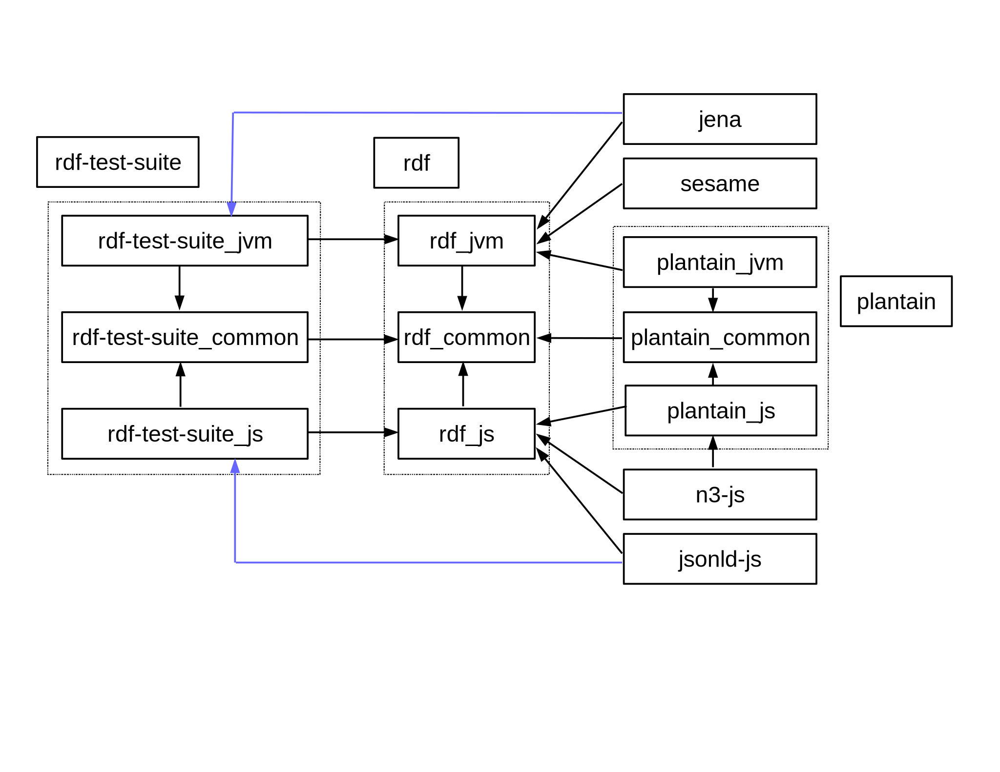

class: center, middle # banana-rdf Alexandre Bertails [@bertails](http://twitter.com/bertails) <br> http://bertails.org/2015/03/17/scaladays-banana-rdf --- ## goals for today * RDF and Linked Data * banana-rdf * some of the techniques in Scala * Scala.js --- ## RDF data model / Linked Data [1/2] ```html $ curl -H 'Accept: text/html' `http://bertails.org/alex` <!DOCTYPE html> <html> <head> <title>Alexandre Bertails</title> <meta http-equiv="Content-Type" content="text/html; charset=utf-8" > <link href="https://fonts.googleapis.com/css?family=Ubuntu+Mono:400,400italic,700,700italic" rel="stylesheet" type="text/css"> <style type="text/css"> body { font-family: 'Ubuntu Mono', sans-serif; background-color: black; ``` --- ## RDF data model / Linked Data [2/2] ```http $ curl -H 'Accept: text/turtle' `http://bertails.org/alex` @prefix schema: <http://schema.org/> . @prefix foaf: <http://xmlns.com/foaf/0.1/> . @prefix cert: <http://www.w3.org/ns/auth/cert#> . <http://bertails.org/alex#me> a schema:Person ; schema:name "Alexandre Bertails" ; schema:image <http://bertails.org/image/alex.jpg> ; cert:key [ a cert:RSAPublicKey ; cert:exponent 65537 ; cert:modulus "bcc..."^^<http://www.w3.org/2001/XMLSchema#hexBinary> ] ; foaf:knows <http://bblfish.net/people/henry/card#me> ; foaf:knows <http://www.w3.org/People/Berners-Lee/card#i> . <http://www.w3.org/People/Berners-Lee/card#i> foaf:name "Timothy Berners-Lee"; foaf:nick "TimBL" . <http://bblfish.net/people/henry/card#me> a foaf:Person ; foaf:name "Henry J. Story" . ``` demo: http://bertails.org/2015/03/17/LinkedDataVerse/index-fastopt.html --- ## Java example (Jena) ```java Model model = FileManager.get().loadModel("http://bertails.org/alex.ttl", null, "TURTLE"); StmtIterator iter = model.listStatements(); try { while ( iter.hasNext() ) { Statement stmt = iter.next(); Resource s = stmt.getSubject(); Resource p = stmt.getPredicate(); RDFNode o = stmt.getObject(); if ( s.isURIResource() ) { System.out.print("URI"); } else if ( s.isAnon() ) { System.out.print("blank"); } ``` --- ## with banana-rdf ```scala val reader = RDFReader[Rdf, Try, Turtle] val alexProfile = "http://bertails.org/alex.ttl" val from = Resource.fromURL(alexProfile) val graph: Rdf#Graph = reader.read(from, base = alexProfile).get graph.triples.take(10).foreach { case Triple(URI(s), p, o) => println(s"$s $p $o") case _ => () } ``` -- <br> .center.big[that is for a given `Rdf <: RDF`!] --- ## Algebraic Data Type for RDF ```scala case class Graph(triples: Set[Triple]) case class Triple(s: Node, p: URI, o: Node) sealed trait Node case class URI(underlying: java.net.URI) extends Node case class BNode(label: String) extends Node case class Literal( lexicalForm: String, datatype: URI, langOpt: Option[Lang] ) extends Node case class Lang(lang: String) ``` -- <br> .big[we **cannot** do that as we need to **abstract over the RDF model**] --- ## type hierarchy ```scala trait RDF { type Graph type Triple type Node type URI <: Node type BNode <: Node type Literal <: Node type Lang ... ``` --- ## typeclass for operations ```scala trait RDFOps[Rdf <: RDF] { // graph def emptyGraph: Rdf#Graph def makeGraph(it: Iterable[Rdf#Triple]): Rdf#Graph def getTriples(graph: Rdf#Graph): Iterable[Rdf#Triple] def graphSize(g: Rdf#Graph): Int // triple def makeTriple(s: Rdf#Node, p: Rdf#URI, o: Rdf#Node): Rdf#Triple def fromTriple(triple: Rdf#Triple): (Rdf#Node, Rdf#URI, Rdf#Node) // node def foldNode[T](node: Rdf#Node)( funURI: Rdf#URI => T, funBNode: Rdf#BNode => T, funLiteral: Rdf#Literal => T): T // URI def makeUri(s: String): Rdf#URI def fromUri(uri: Rdf#URI): String ... ``` --- ## Abstract Data Type (ADT) ### type hierarchy * type names * subtyping relationships * variance ### typeclass for operations * injectors * extractors * fold --- ## banana-jena – type hierarchy ```scala import com.hp.hpl.jena.graph.{ Graph => JenaGraph, Triple => JenaTriple, Node => JenaNode, _ } trait Jena extends RDF { type Graph = JenaGraph type Triple = JenaTriple type Node = JenaNode type URI = Node_URI type BNode = Node_Blank type Literal = Node_Literal type Lang = String } ``` --- ## banana-jena – operations ```scala class JenaOps extends RDFOps[Jena] { def makeTriple(s: Jena#Node, p: Jena#URI, o: Jena#Node): Jena#Triple = JenaTriple.create(s, p, o) def fromTriple(t: Jena#Triple): (Jena#Node, Jena#URI, Jena#Node) = { val s = t.getSubject val p = t.getPredicate val o = t.getObject if (p.isInstanceOf[Jena#URI]) (s, p.asInstanceOf[Jena#URI], o) else sys.error(s"fromTriple: predicate $p must be a URI") ... ``` --- ## tying everything together ```scala trait RDF { ... } trait Jena extends RDF { ... } ``` ```scala trait RDFOps[Rdf <: RDF] { ... } class JenaOps extends RDFOps[Jena] { ... } ``` ```scala trait RDFModule { type Rdf <: RDF } trait RDFOpsModule extends RDFModule { implicit val ops: RDFOps[Rdf] } trait JenaModule extends RDFModule with RDFOpsModule with ... { ... } ``` ```scala object Jena extends JenaModule ``` --- ## writing code against the abstractions ```scala class Collector[Rdf <: RDF](implicit ops: RDFOps[Rdf]) { import ops._ def keepNode(node: Rdf#Node): Option[Rdf#Node] = node.fold( { case uri @ URI(_) if uri.fragment.isDefined => Some(uri) case _ => None }, bnode => None, { case lit @ Literal(lexicalForm, _, None) => Some(lit) case _ => None } ) def collectUris(graph: Rdf#Graph): Iterable[Rdf#Node] = graph.triples.flatMap { case Triple(s, p, o) => keepNode(s).toIterable ++ keepNode(p).toIterable ++ keepNode(o).toIterable } } ``` ```scala implicit object JenaCollector extends Collector[Jena] ``` --- ## writing code against the abstractions ```scala class Collector[Rdf <: RDF](implicit ops: RDFOps[Rdf]) { import ops._ def keepNode(node: Rdf#Node): Option[Rdf#Node] = `node.fold`( { case uri @ `URI`(_) if uri.fragment.isDefined => Some(uri) case _ => None }, bnode => None, { case lit @ `Literal`(lexicalForm, _, None) => Some(lit) case _ => None } ) def collectUris(graph: Rdf#Graph): Iterable[Rdf#Node] = graph`.triples`.flatMap { case `Triple`(s, p, o) => keepNode(s).toIterable ++ keepNode(p).toIterable ++ keepNode(o).toIterable } } ``` ```scala implicit object JenaCollector extends Collector[Jena] ``` --- ## traversing an abstract type hierarchy ### pattern matching ```scala val node: Rdf#Node = ??? node match { case URI(uri) => ??? case BNode(bn) => ??? case LangLiteral(lexicalForm, datatype, langOpt) => ??? } ``` <br> .big[again, we cannot do that **as we do not have an algebraic data type!**] --- ## traversing an abstract type hierarchy ### fold ```scala val node: Rdf#Node = ??? ops.foldNode(node)( uri => ???`,` bnode => ???`,` literal => ??? ) ``` --- ## traversing an abstract type hierarchy ### fold + extractors ```scala val node: Rdf#Node = ??? ops.foldNode(node)( `{` case URI(uri) => ??? `},` `{` case BNode(label) => ??? `},` `{` case Literal(lexicalForm, datatype, langOpt) => ??? `}` ) ``` --- ## traversing an abstract type hierarchy ### fold + extractors / how it works ```scala trait RDFDSL[Rdf <: RDF] { this: RDFOps[Rdf] => object URI { def apply(s: String): Rdf#URI = makeUri(s) def unapply(uri: Rdf#URI): Some[String] = Some(fromUri(uri)) def unapply(node: Rdf#Node): Option[String] = foldNode(node)( unapply, bnode => None, lit => None) ... ``` ```scala trait RDFOps[Rdf <: RDF] extends ... with RDFDSL[Rdf] ... { ... } ``` .center[Q: what is the type of `u` in `{ case u @ URI(_) => u }`?] --- ## traversing an abstract type hierarchy ### fold + extractors + syntactic sugar ```scala val node: Rdf#Node = ??? node`.fold`( `{` case URI(uri) => ??? `},` `{` case BNode(label) => ??? `},` `{` case Literal(lexicalForm, datatype, langOpt) => ??? `}` ) ``` --- ## traversing an abstract type hierarchy ### fold + extractors + syntactic sugar / how it works ```scala trait NodeSyntax[Rdf <: RDF] { self: RDFSyntax[Rdf] => implicit def nodeW(node: Rdf#Node) = new NodeW[Rdf](node) } class NodeW[Rdf <: RDF](val node: Rdf#Node) extends AnyVal { def fold[T](funURI: Rdf#URI => T, funBNode: Rdf#BNode => T, funLiteral: Rdf#Literal => T)( implicit ops: RDFOps[Rdf]): T = ops.foldNode(node)(funURI, funBNode, funLiteral) ... } ``` ```scala trait RDFSyntax[Rdf <: RDF] extends ... with NodeSyntax[Rdf] ... trait RDFOps[Rdf <: RDF] extends ... with RDFSyntax[Rdf] ... { ... } ``` --- ## diesel ```scala import org.w3.banana._, diesel._ ``` #### DSL to contruct pointed graphs ```scala val pg: PointedGraph[Rdf] = ( bnode("betehess") -- foaf.name ->- Literal.tagged("Alexandre", "fr") -- foaf.knows ->- ( URI("http://bblfish.net/#hjs") -- foaf.name ->- "Henry Story" -- foaf.currentProject ->- URI("http://webid.info/") ) ) ``` #### xpath-like DSL ```scala val names: Iterable[PointedGraph[Rdf]] = pg / foaf.name ``` --- ## binders #### going back-and-forth between RDF and Scala ```scala implicit val YearToLiteral = new ToLiteral[Rdf, Int] { def toLiteral(year: Int): Rdf#Literal = Literal(year.toString, xsd("gYear")) } implicit val YearFromLiteral = new FromLiteral[Rdf, Int] { def fromLiteral(literal: Rdf#Literal): Try[Int] = ??? } val gYearBinder = implicitly[PGBinder[Rdf, Int]] ``` Also used in *diesel* --- ## complex binders #### for Scala classes ```scala implicit val recordBinder: RecordBinder[Rdf] = ??? import recordBinder._ case class Actor( abstrakt: String, alias: Option[String], birthYear: Option[Int] ) object Actor { val clazz = foaf.Person implicit val classUris = classUrisFor[Actor](clazz) val abstrakt = property[String](ont("abstract")) val alias = optional[String](ont("alias")) val birthYear = optional[Int](ont("birthYear")) implicit val binder = pgb[Actor](abstrakt, alias, birthYear)(Actor.apply, Actor.unapply) } ``` --- ## SPARQL #### query language for RDF triple/quad stores ```scala implicit val sparqlOps: SparqlOps[Rdf] = ??? implicit val sparqlHttp: SparqlEngine[Rdf, Try, URL] = ??? import sparqlOps._ import sparqlHttp._ val endpoint = new URL("http://dbpedia.org/sparql") val query: Rdf#ContructQuery = parseConstruct(""" PREFIX ont: <http://dbpedia.org/ontology/> CONSTRUCT { ?actor ?p ?o } WHERE { <http://dbpedia.org/resource/Star_Trek:_The_Original_Series> ont:starring ?actor . ?actor ?p ?o . } """).get val resultGraph: Rdf#Graph = endpoint.executeConstruct(query).get ``` --- ## prefixes ```scala class FOAFPrefix[Rdf <: RDF](ops: RDFOps[Rdf]) extends PrefixBuilder("foaf", "http://xmlns.com/foaf/0.1/")(ops) { val Agent = apply("Agent") val Document = apply("Document") ... ``` #### in Turtle ```turtle @prefix foaf: <http://xmlns.com/foaf/0.1/> . ``` <br> macro-based type providers: https://github.com/travisbrown/type-provider-examples --- ## mutable graphs #### because all implementations rely on them... ```scala trait MGraphOps[Rdf <: RDF] { def makeMGraph(graph: Rdf#Graph): Rdf#MGraph def makeEmptyMGraph(): Rdf#MGraph def exists(mgraph: Rdf#MGraph, triple: Rdf#Triple): Boolean def addTriple(mgraph: Rdf#MGraph, triple: Rdf#Triple): mgraph.type def removeTriple(mgraph: Rdf#MGraph, triple: Rdf#Triple): mgraph.type def sizeMGraph(mgraph: Rdf#MGraph): Int def makeIGraph(mgraph: Rdf#MGraph): Rdf#Graph } trait RDFOps[Rdf <: RDF] extends MGraphOps[Rdf] with ... { ... } trait RDFSyntax[Rdf <: RDF] extends ... with MGraphSyntaxSyntax[Rdf] ... ``` --- ## IO framework ```scala val turtleReader = RDFReader[Rdf, Try, Turtle] val rdfxmlWriter = RDFWriter[Rdf, Try, RDFXML] val input: StringReader = ??? val graph: Rdf#Graph = turtleReader.read(input, "http://example.com").get ``` #### return type is parameterized ```scala trait RDFReader[Rdf <: RDF, M[_], +S] { def read(is: InputStream, base: String): M[Rdf#Graph] def read(reader: Reader, base: String): M[Rdf#Graph] } ``` --- ## modules overview  --- ## Scala.js: "no long experimental!" [@odersky] ```scala class LinkedDataClient[Rdf <: RDF](implicit ops: RDFOps[Rdf], turtleParser: RDFReader[Rdf, Future, Turtle], jsonLdParser: RDFReader[Rdf, Future, JsonLd] ) { import ops._ def get(url: String): Future[Rdf#Graph] = { val hashlessUrl = url.replaceAll("#[^#]*$", "") Ajax.get(hashlessUrl, headers = LinkedDataClient.headers).flatMap { xhr => def input = new java.io.StringReader(xhr.responseText) val contentType = xhr.getResponseHeader("Content-Type").split(";").head contentType match { case "text/turtle" => turtleParser.read(input, url) case "application/ld+json" | "application/json" => jsonLdParser.read(input, url).map(graph => LDGraph(graph)) } } } } ``` --- ## plantain-js ```scala trait Plantain extends RDF { type Graph = model.Graph[Node, URI, Node] type Triple = (Node, URI, Node) type Node = Any * type URI = java.net.URI type BNode = model.BNode type Literal = model.Literal type Lang = String ... } ``` ```scala case class Graph[S, P, O](spo: Map[S, Map[P, Vector[O]]], size: Int) { ... } ``` --- ## n3-js [1/2] ```scala trait N3js extends RDF { type Graph = plantain.model.Graph[Node, URI, Node] type Triple = (Node, URI, Node) type Node = Any * type URI = String type BNode = n3js.BNode * type Literal = String type Lang = String ... } ``` --- ## n3-js [2/2] ```scala object N3jsOps extends RDFOps[N3js] with N3jsMGraphOps with DefaultURIOps[N3js] { import `N3.Util` ... final def foldNode[T]( node: N3js#Node)( funURI: N3js#URI => T, funBNode: N3js#BNode => T, funLiteral: N3js#Literal => T ): T = node match { case bnode @ n3js.BNode(_) => funBNode(bnode) case s: String if `Util.isIRI`(s) => funURI(s) case s: String if `Util.isLiteral`(s) => funLiteral(s) } ... } ``` --- ## dependencies #### WebJars https://github.com/webjars/N3.js jsonld.js? -- #### jsDependencies * never included in `fastopt.js` * `packageJSDependencies := false` * gets into `-jsdeps.js` * initially for unit tests -- #### dependency hell * managing JS dependencies (bower) * conflicts, missing updates --- ## tooling #### sbt-scalajs #### standard library * `java.net.URI` #### testing * zcheck * utest #### environments node.js vs browser #### travis-ci --- ## what's next * revised IO abstractions * documentation * **banana-rdf 1.0** * Linked Data Patch * pure Scala parser for Turtle (Parboiled2) * better binders (Shapeless) * index-aware Plantain graphs * type providers (macros, see https://github.com/travisbrown/type-provider-examples) * SPARQL String interpolation * diesel for mutable graphs --- ## that's all folks ### some reading * https://github.com/w3c/banana-rdf * https://github.com/betehess/banana-rdf-example * https://github.com/betehess/LinkedDataVerse/ * http://bertails.org/2015/02/15/abstract-algebraic-data-type ### many thanks * banana-rdf: @InTheNow @bblfish @antonkulaga * Scala.js: @sjrd @li_haoyi @InTheNow @jducoeur * LinkedDataVerse: @mrspeaker * scalacheck: @rickynils @InTheNow * N3.js: @RubenVerborgh * jsonld.js: @dlongley